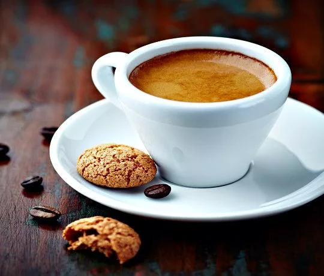
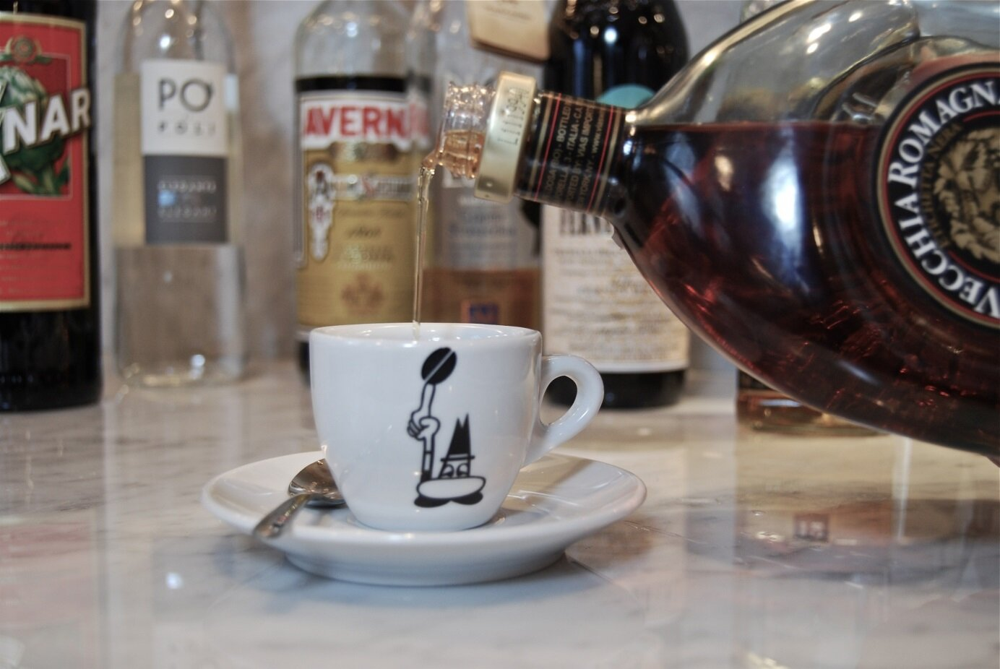

КОФЕ КОРЕТТО
Кофе коретто – это итальянская вариация эспрессо, которая предполагает добавление небольшого количества
алкогольного напитка. Название "corretto" в переводе с итальянского означает "исправленный" или "приправленный",
что отражает суть напитка – эспрессо, дополненный для улучшения вкуса.
Традиционно в качестве алкогольной добавки используют граппу, итальянский виноградный бренди,
но также популярны варианты с самбукой (анисовым ликером) или бренди.


Коретто – это, как правило, небольшая порция, подаваемая в чашке для эспрессо, рассчитанная на пару глотков. Это не кофейный коктейль,
а скорее способ "подправить" вкус обычного эспрессо. В классическом рецепте коретто не предполагается добавление молока, сливок, сахара
ли других ингредиентов, кроме алкоголя, хотя некоторые люди могут добавлять сахар по вкусу. На севере Италии коретто с граппой часто
употребляют утром, особенно после плотного обеда или ужина.
Кофе коретто – это простой, но элегантный способ насладиться эспрессо с добавлением итальянского колорита.